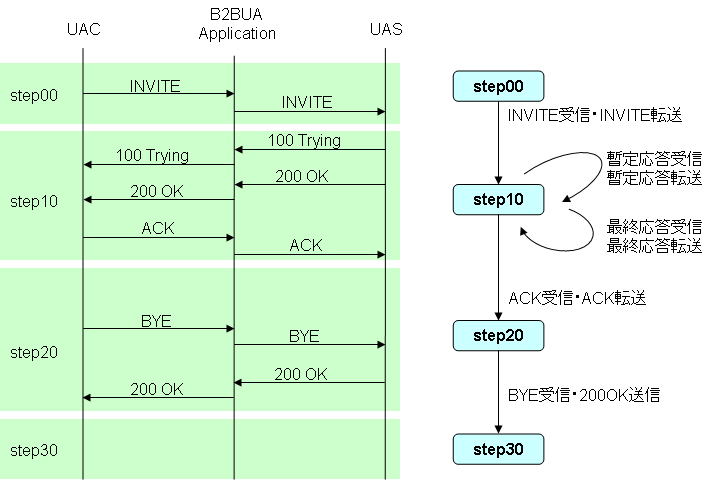
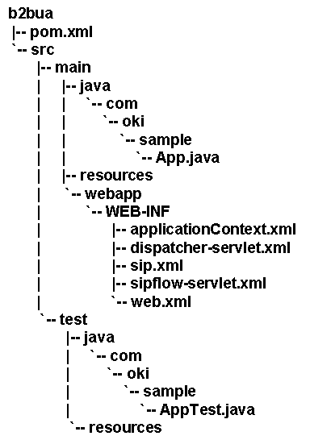
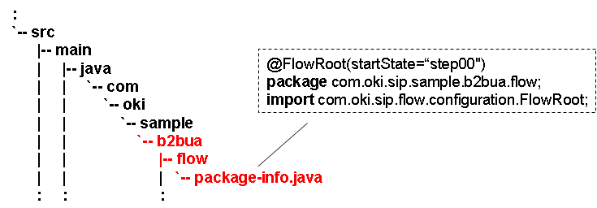
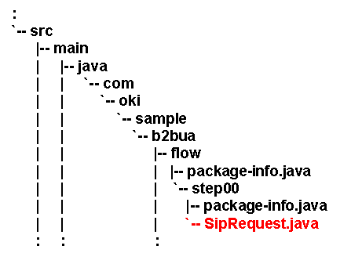
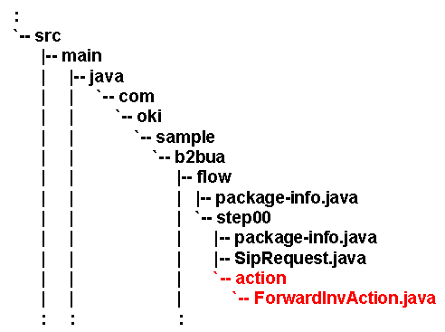

sf-flow-api
作成するアプリケーション
本チュートリアルではB2BUAアプリケーションを作成します。
以下のSIPシーケンスが動作するようなアプリケーションを作成します。

Fig.6 B2BUAアプリケーションのシーケンス図
B2BUAアプリケーションの作成
Fig.5の手順でB2BUAアプリケーションを開発します。

Fig.5 開発手順
状態遷移の設計
今回はFig.7のように状態遷移を設計しました。 この状態遷移図を元にB2BUAアプリケーションを開発します。
Fig.7 B2BUAアプリケーションの状態遷移図
Create an archetype
まずは、以下のコマンドを実行し、sf-flow用のMaven2Archetypeを作成します。
$ mvn archetype:create -DarchetypeGroupId=org.mobicents.ssf -DarchetyepArtifactId=sf-flow-archetype -DarchetypeVersion=2.0-SNAPSHOT -DgroupId=com.oki.sample -DartifactId=b2bua
以下のディレクトリ構造が作成されます。
Create a FlowRoot, Set initial state name
次にFlowRootパッケージを作成します。
今回は"com.oki.sample.b2bua.flow"をFlowRootパッケージとします。また、初期状態を"step00"とします。
mvn compile, Auto generated a state package
以下のコマンドを実行します。
$ mvn compile
"step00" Stateが自動生成されます。
Create the Evaluate class and set the Action Classes.
Stateを作成したら、そのStateのEvaluate Classを作成します。
step00では"INVITE"を受信したら処理を開始するので、SIPリクエスト用のEvaluate Class"SipRequest"を作成します。
INVITEリクエストを受信したら、INVITEを転送するので、@Evaluateアノテーションの付いたメソッドは以下のようになります。
@Evaluate
public String evaluate(SipServletRequest req) {
if (req.isInitial() && "INVITE".equals(req.getMethod())) {
return "action.forwardInv";
}
return null;
}
受信したSIPリクエストがINVITEメソッドの場合に、"com.oki.sample.b2bua.flow.action.ForwardInvAction"という名前のAction Classを呼び出します。後で"ForwardInvAction"を実装し、その中でINVITEを転送する処理を記述します。 なお、メソッドの返り値に"."が含まれていると、"."より前の部分はパッケージであるとsf-flowは判断します。１つのStateパッケージに複数のEvaluate ClassやAction Classがある場合は、この例のようにパッケージを分けるとわかりやすい場合があります。
INVITEメソッド以外の場合はnullを返しています。nullの場合は遷移しないという意味です。
Evaluate ClassにおけるAction Classの指定は、@TrasitionSetでも指定が必要です。今回は"action.forwardInv"だけなので以下のようになります。
@TransitionSet(values={"action.forwardInv"})
public class SipRequest {
mvn compile, Auto generated the Action class
以下のコマンドを実行します。
$ mvn compile
"action"パッケージと"ForwardInvAction"クラスが自動生成されます。
Implement the Action class and set the transitions.
生成された"ForwardInvAction"を実装します。
ここではINVITEリクエストを他方へ転送するので、以下のようなプログラムになります。
public void execute(SipServletRequest req, SipFactory factory, PeerLocation peerLocation) throws Exception {
// create HeaderMap
SipURI uri = (SipURI)peerLocation.getAddress(req.getFrom(), req.getTo()).getURI();
Map<String, List<String>> map = HeaderMapUtil.createHeaderMap("To", uri.toString());
// create new INVITE Request
B2buaHelper helper = req.getB2buaHelper();
SipServletRequest invite = helper.createRequest(req, true, map);
invite.setRequestURI((URI)uri);
SipContentUtil.copy(req, invite);
// send INVITE Request
invite.send();
}
PeerLocationは転送先を提供するInterfaceです。実際に使用する実装クラスは、sipflow-servlet.xml内でBean登録してあります。 PeerLocationImpleは、"targetHost"と"targetPort"で指定したAddressを返します。
<bean id="peerLocation" class="com.oki.sample.b2bua.bean.PeerLocationImpl">
<property name="targetHost" value="127.0.0.1" />
<property name="targetPort" value="5065" />
</bean>
"HeaderMapUtil"と"SipContentUtil"は別途作成したユーティリティクラスです。詳細はソースを確認してください。
次の状態は"step10"なので、以下のように記述します。
@Transition("step10")
public void execute(SipServletRequest req, SipFactory factory, PeerLocation peerLocation) throws Exception {
以上で、step00の作成は終了です。
Step10の作成
続いて、step10の作成を行います。以下のコマンドを実行してstep10パッケージを作成します。
$ mvn compile
同様に、Evaluate Classを作成します。step10ではSIPリクエストとSIPレスポンスを受信する可能性があるので、SipRequestクラスとSipResponseクラスを作成します。
先に、SipResponseの解説からします。SipResponseクラスは以下のようになります。
@TransitionSet(values={"action.forward1xx", "action.forwardResInv"})
public class SipResponse {
@Evaluate
public String evaluate(SipServletResponse res) {
int status = res.getStatus();
String method = res.getMethod();
if ("INVITE".equals(method)) {
if (status < 200) {
return "action.forward1xx";
} else {
return "action.forwardResInv";
}
}
}
Action Classを２つに派生させているのは、それぞれ処理内容が異なるためです。
| Returned Value | Description |
| action.forward1xx | 1xx応答を転送する。処理完了後、状態は遷移しない。 |
| action.forwardResInv | INVITEに対する最終応答を転送する。転送するメッセージはB2buaHelper.createResponseToOriginalRequestを使用して作成する。処理完了後、状態は遷移しない。 |
以下のコマンドを実行し、それぞれのAction Classを実装します。
$ mvn compile
それぞれのAction Classは以下のようになります。
public class Forward1xxAction {
@Transition("step10")
public void execute(SipServletResponse res) throws IOException, Rel100Exception {
// create new Response
B2buaHelper helper = res.getRequest().getB2buaHelper();
SipServletRequest orgReq = helper.getLinkedSipServletRequest(res.getRequest());
SipServletResponse res2 = orgReq.createResponse(res.getStatus());
SipContentUtil.copy(res, res2);
// send new Response
res2.send();
}
}
public class ForwardResInvAction {
@Transition("step10")
public void execute(SipServletResponse res) throws IOException {
// create new Response
B2buaHelper helper = res.getRequest().getB2buaHelper();
SipSession peerSession = helper.getLinkedSession(res.getSession());
SipServletResponse res2 = helper.createResponseToOriginalRequest(peerSession, res.getStatus(), res.getReasonPhrase());
SipContentUtil.copy(res, res2);
// send new Response
res2.send();
}
}
次に、SipRequestの解説をします。SipRequestは以下のようになります。
@TransitionSet(values={"action.forwardAck"})
public class SipRequest {
@Evaluate
public String evaluate(SipServletRequest req) {
if ("ACK".equals(req.getMethod())) {
return "action.forwardAck";
} else {
return null;
}
}
}
Action Classは1つだけです。
| Returned Value | Description |
| action.forwardAck | ACKリクエストを転送する。処理完了後、次の状態に遷移する。 |
以下のコマンドを実行し、それぞれのAction Classを実装します。
$ mvn compile
それぞれのAction Classは以下のようになります。
public class ForwardAckAction {
@Transition("step20")
public void execute(SipSession session, SipServletRequest req) throws IOException, Rel100Exception {
// create ACK request
B2buaHelper helper = req.getB2buaHelper();
SipSession peerSession = helper.getLinkedSession(req.getSession());
List<SipServletMessage> pendings = helper.getPendingMessages(peerSession, UAMode.UAC);
SipServletResponse res = B2buaHelperUtil.getPendingResponse(pendings, "INVITE");
SipServletRequest ack = res.createAck();
SipContentUtil.copy(req, ack);
// send
ack.send();
}
}